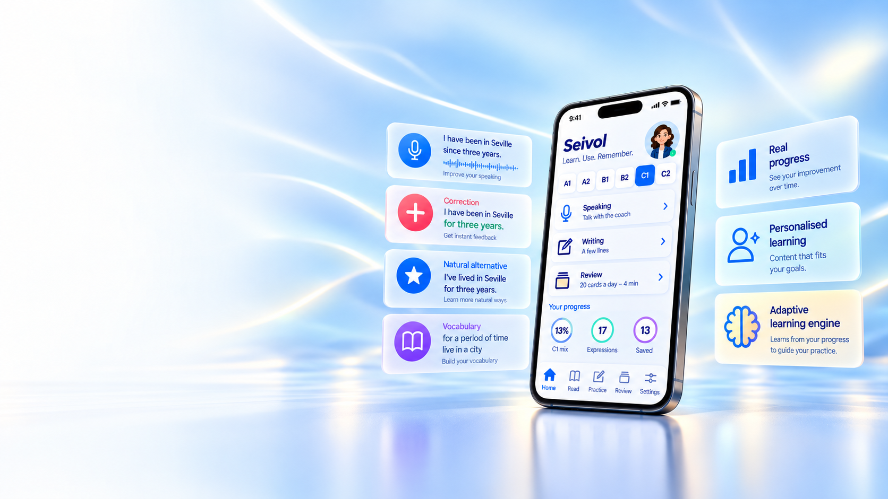
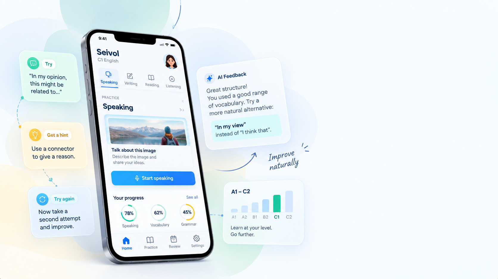

Small steps.
Real practice.
Lasting learning.
Personalised English practice that helps you remember more, use what you learn and gradually become more independent.

THE LEARNING CYCLE
Understand it.
Make it yours.
Learning does not happen in a single encounter. Seivol brings language back through meaningful exposure, retrieval, use and review — adapting practice as you progress.
Threaded through every step: mounting pressure
-
01
Encounter
Meet language in a meaningful context.
-
02
Recall
Bring it back later — with support when needed.
-
03
Use
Apply it in speaking, writing and new situations.
-
04
Revisit
Return over time and strengthen what you have learned.

IN PRACTICE
Try again.
Keep moving.
When you get stuck, Seivol can give you a contextual hint — then room to reformulate and continue.
- 1
Attempt
“I have been in Seville since three years.”
- 2
Contextual hint
Use for with a period of time.
- 3
Try again
Space to rebuild the response — without solving it all.
SUPPORT WHEN YOU NEED IT
A little help.
At the right moment.
When you get stuck, Seivol can give you a contextual hint rather than simply giving you the answer. Try again, reformulate and keep moving.
SPEAKING PRACTICE
Speak it out.
Make it clearer.
Have conversations, receive focused feedback and discover clearer or more natural ways to express what you mean.
- Realistic conversation
- Focused feedback
- Personal error review
- Vocabulary and expressions worth revisiting

CONNECTED EXPERIENCE
Speak. Write.
Practise. Remember.
Your activities are not isolated exercises. Speaking, writing, vocabulary, reading, errors and review contribute to the same learning history, so what happens in one activity can shape what comes next.
LEARNING FIRST
Learning first.
Technology in the background.
Seivol combines learning principles, learner evidence and adaptive technology to decide what may be useful to practise, revisit or reinforce next. The technology is there to support the learning process — not replace it.

NEXT STEP
Be among the first to try Seivol.
Join early access and see how guided practice, memory and feedback can work together in one learning journey.